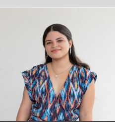

CURRICULUM

Sobre mi
Nombre completo: Esmeilin Maria Batista Baez
Cedula: 4-0231448953-2
Direccion: Los Jardines del rey, Calle E Casa#23
Telefono: 829-274-1590
Email: Esmeilintw@gmail.com
Idiomas que domina:Ingles y Coreano basico
Pasa tiempos: leer,ver anime y jugar videojuegos
Estudios Realizados
Tecnico en informatica bachiller(Finalizado)
Curso de ingles (Finalizado)
Peliculas Favoritas
Un amigo abominable
The Hunger Games
El conjuro
Mi video del futuro